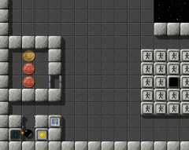
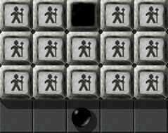
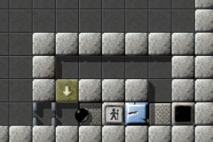

Level des MonatsJeden Monat werfen wir einen näheren Blick auf einen herausragenden Level. Herausragende Levels sind dabei solche, die sich durch die höchsten Bewertungen durch die Spieler auszeichnen, und dabei zugleich von genügend vielen Spielern auch bewertet wurden. Es ist also Ihre Wahl, die den Level des Monats bestimmt. Bitte werten Sie Levels, nachdem Sie sie gespielt haben, und vergessen Sie nicht, die Wertungen zusammen mit Ihren Spielergebnissen zum Ende eines jeden Monats uns zuzusenden. Sie können alle vorigen Level des Monats in unserem Archiv finden. September 2007: „Tool Time“ von Barry und Lori MeadKennen Sie das? Sie stehen in ihrer völlig überfüllten Werkstatt, Ihre altgediente laserbetriebene Drehbank zu Ihrer Rechten, eine heiße Tasse Kaffe steht auf einer kleinen Ablage in einer Ecke besagter Werkstatt, ein vollständig verkrusteter Oxydstein vor Ihnen, der seit langem schon auf eine Generalüberholung wartet; und Ihre Gedanken kreisen nur um eine Frage: „Wo habe ich den Hammer hingelegt?“ Ja, es ist „Tool Time“!

Enigma II # 97
Laut unseren Daten vom Juli haben 13 Spieler über „Tool Time“ abgestimmt, mit einem Schnitt von 8,46, was „Tool Time“ auf Position 6 unserer LdM-Highscoreliste installiert, Kopf an Kopf mit „Elaborate“, der seinen leichten Vorsprung gegenüber „Labyrinth of Puzzles“ in den letzten zwei Monaten eingebüßt hat. Und eine weitere Überraschung der aktuellen Bewertungen: Nachdem er für zwei Monate zweiter hinter „Island Labyrinth“ war, führt „The Aztec Temple“ nun die Liste wieder an, mit einem wirklich marginalen Vorsprung: 9,17 gegen 9,13! „Es ist ziemlich clever gemacht, wie die meisten Tools hergestellt werden müssen“Unglücklicherweise hat diesen Monat nur einer der drei Spieler, die wir um einen Kommentar gebeten haben, auch freundlicherweise geantwortet. Ein vierter war zumindest so nett uns umgehend zu antworten, dass er keine Zeit hat. Da es zu spät gewesen wäre, andere um Kommentare zu bitten (und wir im übrigen keine Babysitter sind), wird dieser Artikel leider kürzer ausfallen als gewöhnlich. Ich denke, man könnte sagen, dass wir den Gipfel des LdM überschritten haben, meinst Du nicht, Harry? Ja, man könnte vielleicht auf diesen Gedanken kommen, Andreas. Der Artikel vom letzten Monat über „Houdini“ war schon ein Höhepunkt in der zugegebenermaßen noch ziemlich jungen Geschichte von „Level des Monats“. Aber ist es nicht eine Freude, jeden Monat aufs Neue einen näheren Blick auf einen herausragenden Level werfen zu dürfen?! Und ob mit oder ohne die Unterstützung durch die Berichte unserer geschätzten Mitspieler werden wir es auch dieses Mal hinbekommen, einen dem Anlass angemessen Beitrag zu verfassen, und „Tool Time“ als einen weiteren Höhepunkt der Levelgestaltungskunst zu würdigen. Und sagt nicht das alte Sprichwort „In der Kürze liegt die Würze“? Wenn der Artikel also dieses Mal etwas kürzer ausfällt als üblich, so ist dies sicherlich nicht als ein Anzeichen von geringerer Qualität zu bewerten. Vergleicht man etwa die Lösungszeiten von „Houdini“ mit denen von „Tool Time“, könnte man den Eindruck gewinnen, das es ein Leichtes ist, „Tool Time“ zu bewältigen. Weit gefehlt, man muss schon einiges an Zeit investieren, bis man herausgefunden hat, wie man „Tool Time“ am besten „bewerkstelligt“, um dann eine schnelle „Tool Time“ erzielen zu können. Es braucht einiges an Zeit, all die Dinge zusammenzubringen, und bist du endlich dann so weit, soll es dir auch gelingen, all die Oxyds weit und breit, zum Erleuchten zu bringen. Andreas, schau' dir nur diesen lieblichen Reim an! Meinst du nicht, an mir ist ein Dichter verloren gegangen?

„Hört zu, Zinnsoldaten, wenn ich erstmal
meinen Dosenöffner gefunden habe …“ Das könnte man denken, Harry. Aber ich frage mich, wie Du diese durchtriebene Dichtkunst zu dolmetschen gedenkst, für unsere englischsprachigen Leserinnen und Leser? Wo wir gerade von Künstlern sprechen, das Design von „Tool Time“ ist recht vertraut, man trifft es oft in anderen Levels wie „Set Me Free“ oder „Laser Paradise“ an. Besonders die Ähnlichkeit zu „Disk Royal“ fällt auf. Ich denke, man könnte dies „illmind-inspiriertes Design“ nennen, meinst Du nicht, Harry? In der Tat, Andreas, auf diese Idee könnte man leicht kommen. Aber hat diese Periode, die du als „illmind-inspiriertes Design“ bezeichnest, nicht erst zwei Jahre nach dem Erscheinen von „Tool Time“ eingesetzt? Bestimmt meinst du damit doch diese Mischung aus grauen Mauersteinen (st-rock1) und schwarzen Bodenfliesen (fl-black)? Diese Kombination vermittelt einem ein unheimliches Gefühl, das einem die Haare zu Berge stehen lässt, so in etwa als ob man in den Verliesen von Burg Frankenstein unterwegs ist, in beständiger Angst, dass auf einmal Doktor F.'s Monster um die Ecke biegt. Wenn ich meine Nachforschungen in dieser Angelegenheit richtig durchgeführt habe, will heißen, wenn ich meinen Assistenten Grep korrekt instruiert habe, dann waren Lori und Barry Mead die ersten, die diese unheimlich anheimelnde Komposition aus Wand- und Bodensteinen verwendet haben. Fairerweise sollte man dieses Design also als Mead-Design bezeichnen, meinst du nicht auch, Andreas? Das denke ich, Harry. Und, „Tool Time“ ist noch in einem weiteren Aspekt Erster: Er ist unser erster Level des Monats, der wesentlich Gebrauch davon macht, Objekte zu verstecken. Es ist nicht die böse Art des Versteckens - es geschieht mehr in einem Kontext der Erforschung, in den dieses Feature eingewoben ist. Wo wir von Frankenstein sprechen, das Verstecken hinter Transformationen ist ein weiterer wundervoller Aspekt dieses Levels, und sicherlich der wunderlichste für Anfänger. Mark greift das nochmal auf:
Der Level ist gut durchdacht, was die Anwendung der Items anbelangt. Jedes
einzelne Item hatte einen Verwendungszweck, und es ist ziemlich clever
gemacht, wie die meisten Tools aus anderen Items hergestellt werden müssen,
anstatt einfach nur aufgesammelt und benutzt zu werden.
Kurz davor, den Level zu schaffen, hatte ich mehrere Fehlversuche, die mich
ziemlich frustriert haben. Es lief immer nach dem gleichen Schema ab: Den
Schirm in der oberen rechten Ecke benutzen, um an den Oxyd zu gelangen, und
dann so schnell wie möglich nach unten zu dem anderen Abyss vor der
Kaffeetasse zu fliegen, und dort jedes Mal erst anzukommen, kurz nachdem die
Wirkung des Schirms aufgehört hatte. Schließlich ist mir dann doch klar
geworden, dass es einen wesentlich einfacheren Weg gibt, den ich einfach
übersehen hatte.
Wenn doch nur dieser Laser mehr Power hätte! Dann könnten wir diese Wand im Süden einfach in die Luft jagen! Oder wir könnten uns einen Dampfhammer zusammenbauen, natürlich einen Binford, Modell 6100! Mit so einem Gerät wär's ein Kinderspiel, ein paar Durchgänge in die Mauern einzubauen! Wie meine Tante Julie aus Yorkshire immer gesagt hat: Es geht doch nichts über das richtige Werkzeug! Oder was meinst du dazu, Andreas? Das glaube ich nicht, Harry. Das ist solider Fels vom Typ 1. Wenn das Typ 3 wäre, könnte das funktionieren. Aber Mark hat bestimmt einen anderen Weg gemeint. „Wir entwarfen eine kleine Falle, die der Mittelpunkt dieses Level ist“Barry und Lori gehören zu den weniger bekannten Autoren, und es freut mich sehr, dass einer ihrer drei einzigartigen Levels nun auch Level des Monats geworden ist. Hier ist die Geschichte von „Tool Time“, wie sie uns Barry zugesandt hat:
Ich bin ein allein stehender Vater, und meine Tochter kommt mich zweimal im
Jahr besuchen. Wenn Lori bei mir ist, beschäftigen wir uns am liebsten mit
Computerspielen, und wir waren damals auf der Suche nach einem Rätselspiel.
Ich bin auf Enigma gestoßen, als ich mit Google nach „Puzzle Games“
gesucht habe, und so begannen wir also damit, Enigmalevel zu spielen.
Nachdem wir etwa 95% der Level gelöst hatten, entwickelten wir ein Gefühl
dafür, welche Level uns zusagten, und welche uns eigentlich nur auf den Wecker
gingen. Wir stellten fest, dass „WIR“ die Puzzles am liebsten
hatten, bei denen man ERFORSCHEN und NACHDENKEN muss. So sehr wir diese Level
schätzten, so wenig mochten wir hingegen diejenigen, bei denen man sich
BEEILEN muss.
Ich hatte zuvor etwa 25 Jahre als Elekro-Ingenieur und Software-Entwickler
gearbeitet, so dass mir die Sprache, in der die Enigmalevel geschrieben
werden, keine Probleme bereitete, und meine Tochter Lori war es eigentlich,
die all diese wirklich schwer zu entdeckenden Verstecke ausgeheckt hat, und
auch insgesamt für die geheimnisvolle Atmosphäre des Levels verantwortlich
ist.

Die Mead-Falle
Ein Konzept, dass wir bis dahin in noch keinem einzigen Level verwirklicht
gesehen hatten, ist die Idee, gleich ein „Paar“ von Werkzeugen zu
benötigen, um sich aus einer Falle wieder zu befreien, und es sollte klar
erkennbar sein, um welche Werkzeuge es sich handelt, bevor man sich in die
Falle begibt. Wir entwarfen eine kleine Falle, für die beides, sowohl Schwert
als auch Hammer, benötigt werden, um wieder zu entkommen, und die zugleich
auch der Mittelpunkt des ganzen Geschehens in diesem Level ist.
Genauso gefiel uns die Vorstellung, dass der Samen, aus dem der Holzstein
entsteht, unter einem Gerüst gesetzt werden muss, und der Holzstein so einen
dreifachen Zweck erfüllen kann: 1. einen Bodenschalter gedrückt halten, 2. den
Wert einer Münze verändern und 3. eine Brücke über einen Abgrund bilden.
Und genauso wenig hatten wir jemals zuvor bemerkt, dass jemand auf die Idee
gekommen war, einen Gegenstand unterhalb eines Weltraum-Feldes zu verstecken,
wobei die Flugbahn der Kugel im voraus genau berechnet werden muss, um an das
Objekt zu gelangen.
Ich schätze mal, die Erfahrung, die wir beim Spielen aller Level aus der
Version 0.82 gewonnen haben, kombiniert mit einer Liebe für Rätselspiele im
Allgemeinen hat uns inspiriert, diesen Level zu kreieren.
Wir erinnern uns an Manuels „Pneumatic Delivery“, das er für seinen Vater erschaffen hat. Und „Tool Time“ ist ein gemeinsames Projekt von Vater und Tochter. Es ist großartig zu sehen, wie Enigma Eltern und Kinder zusammenbringt, selbst ohne Netzwerkspiel. Barry, Lori: vielen, vielen Dank für diese wichtige Lektion, und den wunderbaren Level, den Ihr mit uns geteilt habt! Schöne Grüße, |